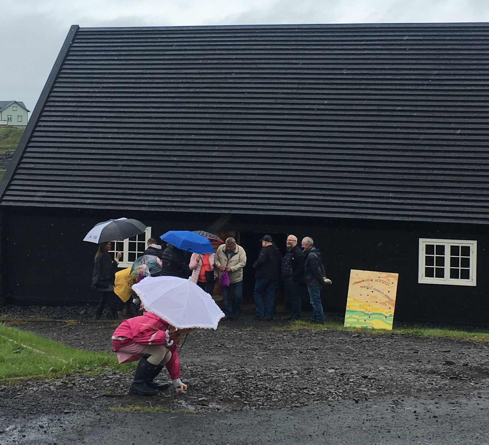

<div id="market_wrap">
    <div class="container">
        <div class="row">
            <div class="col-lg-8 market_img_wrap">
              
            </div>
            <div class="col-lg-4 market_text">
              <div class="market_heading_wrap">
              <h2 class="market_heading">
                Bændamarkaður<br> Hofsósi
              </h2>
              </div>
              <div class="market_info">
              <p>Bændamarkaðurinn Hofsósi er samstarfsverkefni Matís og bænda og annarra framleiðenda og handverksfólks á Norðurlandi. Bændamarkaðurinn fer fram í hinu menningarsögulega um 250 ára gamla Pakkhúsi á Hofsósi, sem tilheyrir Húsasafni Þjóðminjasafns Íslands. Á markaðnum er boðið upp á árstíðabundnar, norðlenskar afurðir. <a routerLink="/bm-hofsos">Smelltu hér</a> fyrir upplýsingar um framleiðendur og vöruframboð, stefnt er að því að hér verði vettvangur fyrir bein viðskipti neytenda við bændur og framleiðendur. Notast er við Blockchain tæknina til að tryggja öryggi og upprunaleika upplýsinga um afurðir.</p><br>
              <div><a class="btn btn-primary btn-xl js-scroll-trigger" routerLink="/bm-hofsos">Opna yfirlitskort</a></div>
            </div>
            </div>
        </div>
    </div>
</div>
